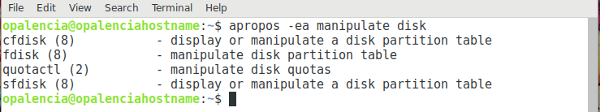

Buscar un comando por su descripción > apropos¶
Nombre del comando: apropos
Man page online: https://linux.die.net/man/1/apropos
Descripción: Busca los nombres y descripciones de los comandos que coincidan con la palabra clave a buscar, es decir, que no conocemos el nombre del comando sino que solo su acción. Es importante porque muestra el número exacto de la man page a la que se quire acceder, ya que un comando puede tener varias man pages. Ejemplo: $ apropos -e “mount”, mostrará mount (2) y mount (8) y para mostrar la man page específica habrá que colocar su número ($ man 2 mount o $ man 8 mount).
Nota
Por lo general las man pages están en inglés, por lo tanto, la palabra clave que describa la acción debe ser en dicho idioma.
Man page local: $ man apropos o $ man apropos > apropos.txt
Instalado por defecto: Sí, al menos en Debian.
Algunas Opciones:
-e, --exact Cada palabra clave se emparejará exactamente con los nombres y las descripciones de las man pages.
-v, --verbose Explique qué se está haciendo.
-a, --and Mostrar solo elementos que coincidan con todas las palabras clave proporcionadas. El valor predeterminado es mostrar los elementos que coinciden con cualquier palabra clave.
Ejemplo 1: $ apropos -e mount, que busque las man pages que contengan la palabra clave “mount”.
Ejemplo 2: $ apropos -ea manipulate disk, que busque las man pages en las cuales la descripción contenga las dos palabras “manipulate” y “disk”.